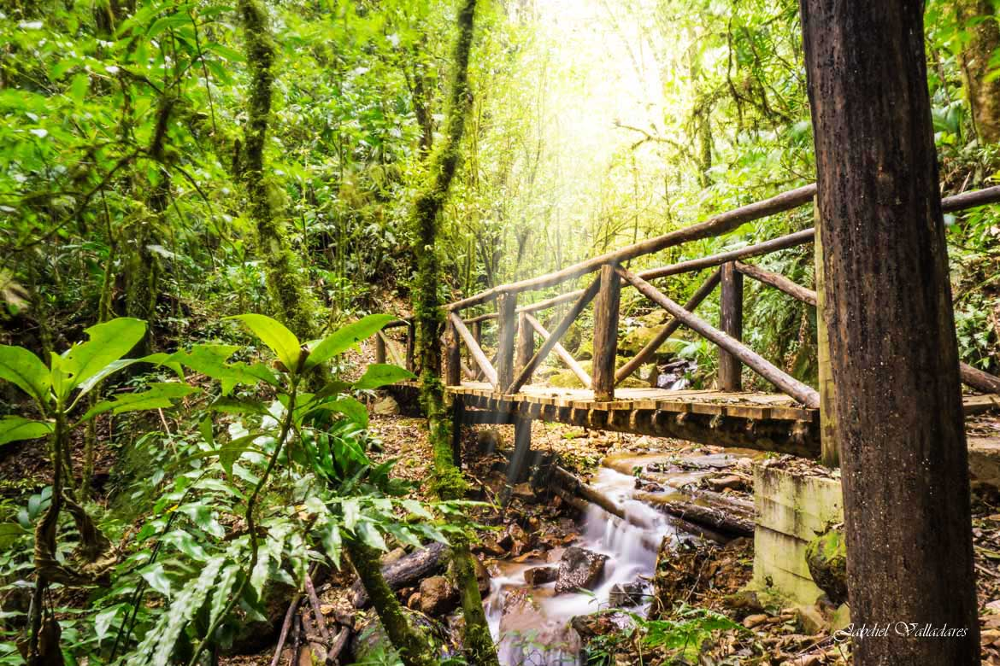

Plantas de Honduras
Animales de Honduras
Biosfera del rio Platano
Pagina Principal
Parque nacional la tigra
El Parque Nacional La Tigra fue el primer parque nacional en Honduras. Su principal objetivo es la conservacion, preservacion ecologica y el mantenimiento del potencial hidrologico y territorial de esta reserva natural.
El parque alberga gran diversidad de especies como: tucanes,monos,tapires,pumas,quetzal y ademas alberga una gran cantidad de insectos y escarabajos.Los helechos son otra atracción principal del parque que miden 20 metros de altura.
